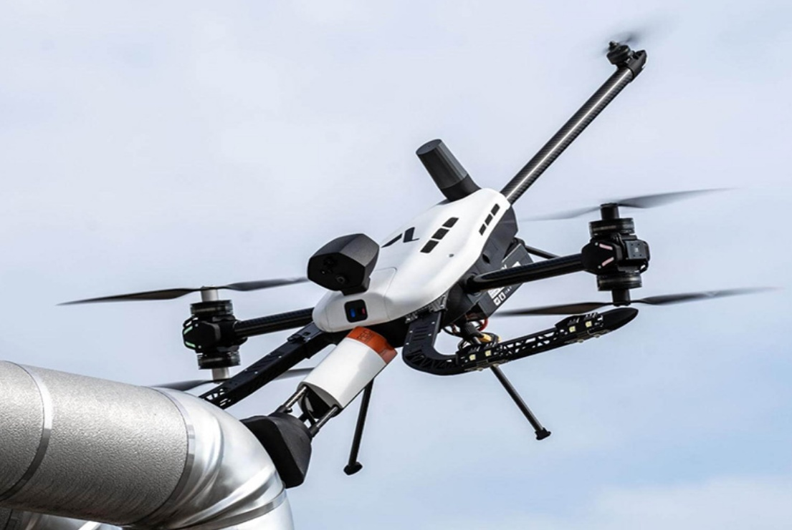

About Me
I'm a mechanical engineering student in Cal Poly's blended B.S./M.S. program, and I will be graduating in December 2027 with a Master's degree in Mechanical Engineering with a concentration in Mechatronics. I like work that goes all the way from CAD to a finished part: designing in SolidWorks, then machining, printing and assembling it myself. So far that has meant drone payloads, UAS hardware and biomedical implants.
I'm currently an engineering intern at Overwatch Aero and I'm working on an industry-sponsored senior project with Voliro AG. I'm looking for a Summer 2027 internship in mechanical, manufacturing, robotics or aerospace engineering in Southern California.
In my free time I like building personal projects, especially ones involving laser cutting, 3D printing, software tools and machine learning.
Education
California Polytechnic State University, San Luis Obispo
M.S. in Mechanical Engineering, Concentration in Mechatronics (blended program), Expected Graduation: December 2027
B.S. in Mechanical Engineering, Expected Graduation: December 2026
Skills
- CAD/FEA: SolidWorks, ANSYS, Autodesk Fusion 360, Creo, Onshape, LTspice
- Manufacturing & Prototyping: Engineering drawings, CNC machining, wire EDM, mill & lathe fabrication, 3D printing (FDM/SLA), composites, materials selection & testing
- Programming: MATLAB, Python, Engineering Equation Solver (EES), JavaScript
- Certifications: FAA Part 107 Remote Pilot
- Languages: English (fluent), German (fluent)
Experience
-
Engineering Intern, Overwatch Aero
- Built and set up an Avid CNC machine, including all supporting infrastructure required for operation.
- Designed and manufactured a mounting solution for a drone-mounted payload.
- Designed and built a carbon fiber/composite cart with adjustable rollers.
- Designed a rooftop truck mount for a drone to validate pitot tube accuracy ahead of flight testing.
- Installed camera gimbals in helicopters and airplanes, and built wiring harnesses for UAS platforms.
- Obtained FAA Part 107 Remote Pilot Certification.
-
Manufacturing Engineering Intern, Tri-Power Design
- Engineered and modeled an acetabular augmentation system prototype for revision total hip replacement, applying DFM principles.
- Operated CNC machines, wire EDM, lathes and manual mills to manufacture biomedical implants and equipment in compliance with ISO specifications.
- Interpreted complex engineering drawings to manufacture high-precision parts.
- Assembled biomedical automation machines, ensuring functional performance against specifications.
-
Member, Tikkun Olam Makers (Cal Poly Chapter)
- Design and 3D print affordable, open-source assistive technology for people with disabilities, including custom prosthetic attachments and mobility devices.
- Collaborate with local partners including CAPSLO, SLO SELPA and Cal Poly's Disability Resource Center to build devices for specific end users.
Engineering Projects
-
Aerial EMAT Scanning Payload: Senior Design with Voliro AG
- Developing a robotic arm payload that lets the Voliro T inspection drone do aerial EMAT area scanning.
- Building a first-of-its-kind EMAT-based system that turns point corrosion measurements into continuous area mapping.
- Designed and validated the complete payload assembly in SolidWorks, including structural architecture, mounting interface and mass optimization.
- Performed static and modal FEA to quantify stress, deflection, natural frequencies and factor of safety under contact and flight loads.
- Built and tested a proof-of-concept prototype integrating actuation, EMAT sensing and control software.

Software Projects
-
Mustang Guide
- A searchable, filterable guide to the rentals, discounts, classes and San Luis Obispo experiences Cal Poly students should take advantage of.
-
Imposter
- A free pass-and-play party game in the style of Spyfall. It runs in the browser with no account or backend and can be installed to a phone's home screen.
-
MeshFind
- A single search page for printable 3D models and editable CAD across many source sites.
-
True Black To Do
- A to-do list, calendar and sticky notes workspace that saves automatically in the browser.
-
Launchpad Internship Dashboard
- A private dashboard that collects internship postings from 110+ employer career sites every 6 hours and tracks each application from saved to offer.
-
Local LLM Lab
- Ran open-source language models on my laptop's GPU and built a browser chat page, a small coding agent and a benchmark comparing models on coding, reasoning and tool use.